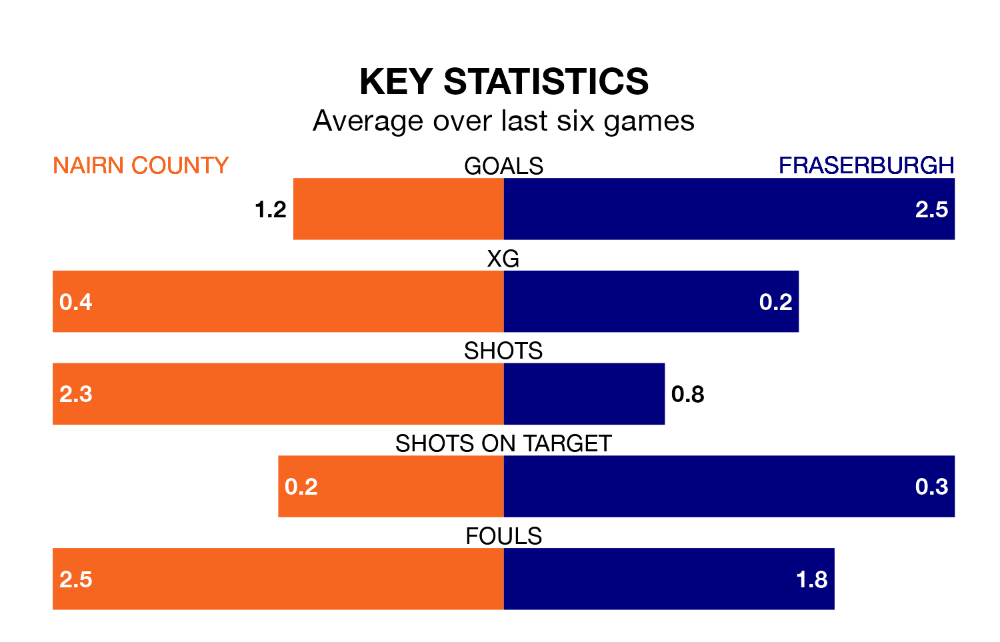

Fraserburgh visit Nairn County at Station Park on Saturday on the back of three consecutive wins in the Highland Football League.
Fraserburgh have picked up 13 points from their last six games, and they face a Nairn side who lost their last match, and have collected five points from the last possible 18.
With 70 goals in 27 games so far this season, Fraserburgh are the league's third-highest scorers with 2.6 goals per game. And they are conceding fewer than average, letting in 33 goals at a rate of 1.2 per game.
Nairn, meanwhile, are average scorers, with 1.9 goals per game. They have conceded 1.8 goals per game.
The Broch are third in the table after 27 games, of which they have won 18 and drawn three, earning 57 points.
County are four places behind the visitors in seventh, with 15 wins and three draws putting them on 48 points.
In the last 10 years, Nairn and Fraserburgh have played each other on 14 occasions. Nairn won one of them, Fraserburgh nine, and they drew four times.
On average, Nairn scored 1.1 goals and the Broch 2.2 in those matches.
Their last meeting was on February 24, when Fraserburgh won 3-0 at home.
Nairn's last match was on Wednesday, a 2-1 loss against Brora Rangers.
Fraserburgh beat Banks O' Dee 2-1 last time out, on March 9.
Updated: 15:10 (UTC), 15/03/24